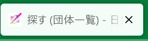

Vueとは何か
Vueとは何か
Vue (発音は /vjuː/、view と同様) は、ユーザーインターフェースの構築のための JavaScript フレームワークです。標準的な HTML、CSS、JavaScript を土台とする、コンポーネントベースの宣言的なプログラミングモデルを提供します。シンプルなものから複雑なものまで、ユーザーインターフェースの開発を効率的に支えるフレームワークです。
Vue 3の公式ドキュメントより
QUAINTのフロントエンドで用いている Nuxt.js (後述)のベースとなっている、JavaScript のフレームワークです。
正式名称は Vue.js です。
バージョンは Vue 2 です。そのため Vue 3 の書き方とは異なる部分が多々ありますので注意してください。
ちなみに Vue.js の js とは、JavaScript の略です。
ただし、QUAINT では JavaScript ではなく TypeScript を主に用いています。
詳しくは：scriptについて詳しく
quaint-appレポジトリは、そのlanguageの9割以上をVueが占めているように、
Vueのファイルである.vueファイルが基本となっています。
このページでも、vueファイルについてを主に記述します。
ディレクトリ位置による違い
vueファイルは、pagesフォルダ配下、layoutフォルダ配下、componentsフォルダ配下に配置します。
pagesフォルダ配下のものは、seiryofes.comの各ページの中身にあたります。
詳しくは：ルーティング
layoutsフォルダ配下のものは、seiryofes.comのどのページでも表示されうるもの、例えば左上のハンバーガーメニューや(layouts/default.vue)、存在しないURLに飛んだ時の画面など(layouts/error.vue)です。
詳しくは：fallbackについて
componentsフォルダ内には、どのページでも使える自作componentを記述したものを入れます。2023年度においてはあまり使いませんでしたが、もっと積極的に使うべきものです。
このページでは基本的に、pagesフォルダ、layoutsフォルダ配下のvueファイルを想定しています。
vueファイルの構造
vueファイルの大まかな構造は次のようになっています。
1 2 3 4 5 6 7 8 9 10 11 12 13 14 15 16 | |
大きく分けると、以下の3つのセクションで構成されます。
template
<template>では、componentを用いて画面そのものを設定します。
componentとは、画面上のボタンや検索バーなど、画面の構成部品のことです。
例えば、この位置にボタンを設置し、この位置に検索バーを設置する、といったことを行います。
HTML と Vue.js の独自の書き方、および Vuetify を使って記述します。
templateについて詳しく
script
<script>では、表示される画面の裏で動く処理、いわばページを「動かす」ための記述をします。
例えば、<template>のボタン1が押されたとき、<script>の処理1を行うようにする、といったことを行います。
JavaScript の拡張版である TypeScript を基本として、Vue.js や Nuxt.js の独自の書き方も用いて記述します。
scriptについて詳しく
style
<style>では、画面のデザインを調整します。
例えば、この文章を中央寄せにして、この文章の色を赤色にする、といったことを行います。
CSS で記述します。これら3つの中では最も単純だと思います。
styleについて詳しく
また、Node.js という言わば「JavaScriptの実行環境」がありますが、開発する上ではあまり気にしなくて結構です。
詳しくは省きます。
templateについて詳しく
HTML と Vue.js の独自の書き方、および Vuetify を使って記述します。
そもそも HTML とは、WEBページを作成するための言語のことです。
例えば、見出しや段落・表・リンクなどを設定します。
詳しくはこちら：初心者向けHTML入門
では、Vuetify とは何でしょう。
Vue の CSSフレームワークの一つです。正式名称は Vuetify.js です。
Vuetify を使うと、CSSファイルを作成せずにレイアウトを整えることができます。とても便利です。
指定のタグを記述するだけで、デザイン込みのステキなパーツを表示することができます。
なお、デザインは2014年にGoogleが発表したマテリアルデザインというオシャレな概念を元に作成されています。
Vuetify（ビューティファイ）とは何か？より
ドキュメントが充実しています。
(ドキュメントのリンク)
バージョンは Vuetify 2 です。Vuetify 3 のドキュメントは仕様が違う箇所があるので注意してください。
(Vuetify 2 のドキュメントは日本語対応していますが Vuetify 3 は対応していないという違いもあります)
この<template>の記述は、最終的に完全に HTML のファイルに変換されます。
具体的な書き方
HTML と同じように、入り子構造で成ります。
1 2 3 4 5 6 7 8 9 10 11 12 | |
HTML の書き方についてはこちら：初心者向けHTML入門
コード全体をはさんでいる<template>が、HTML でいう<html>のようなものです。Vue 独自の書き方です。
注意
状況は限られていますが、<template>の中に、また別に<template>タグが入ることがあります。
詳しくは【工事中】
<v-hogehoge>のように、v-から始まっているタグは Vuetify のコンポーネントです。
また、Vuetify のものは基本的にすべて終了タグを必要とします。ですが実質的に意味をなしていないもの、例えば<v-spacer>などのために、<v-spacer></v-spacer>のことを
<v-spacer />と略記することができます。
<br>なども<br />と表記することがあります。
一番最初の<v-app>は必須です。<v-app>がないと Vuetify は使えません。
次の<v-container>は必須ではありませんが、基本記述するものという認識で良いです。
詳しく
<v-container>中の内容は、両端に空白が挿入されるため、見やすくなります。中央寄せもされます。
対し、どうしても画面端のぎりぎりに何かを置きたい場合などは、<v-container>外に設置することで実現できます。
2023年度のトップページの右端まで色をつけている部分がその代表例です。
しかし、<v-container>外に設置しなくても実装できたのではないかと今思っています。検証はまた今度行います。【工事中】
<v-container>に加え、<v-row>や<v-col>などがあります。主にこの3つを用いて Vuetify のグリッドを構成します。
詳しくはこちら：Vuetify Grid System
またグリッドについては<v-spacer>も有用です。
詳しくはこちら：Grid system
また、少し話は逸れますが、グリッドという点では margin や padding も大事な要素です。
詳しくはこちら：marginやpaddingの調整がめっちゃ楽な件
コメントアウトの方法は HTML のものと同じです。
具体的な書き方は既存のvueファイルを見て学ぶのが良いと思います。
その他のcomponent
NuxtLink
詳しくは【工事中】
client-only
詳しくは【工事中】
変数について
Vue では、データが更新されたときに自動で表示を更新します。
(この表示のことをDOMと呼び、このことをリアクティブであると表現することがあります。)
つまり、<template>と<script>の間で変数は共有されているということになります。
ただし、ある意味当然ですが、<template>ではグローバル変数しか用いることができません。
詳しくは：スコープとthis
具体的に変数を用いるには、Mustache記法やv-bind等があります。
Mustache記法について詳しくはこちら：Mustashe（マスタッシュ）記法
v-bind等については次のディレクティブの項で説明します。
ディレクティブ
ディレクティブについて：主要なディレクティブ一覧
いくつか補足します。
v-ifとv-show
seiryofes.comではv-showの方が多く用いられています。
詳しくはこちら：Vue.jsのv-ifとv-showの違い
条件付きレンダリング
v-for
v-forを使う際は、必ず:key="hogehoge"も併記してください。
このhogehogeには、例えばv-for="item in items"の場合は:key="item.id"のように、配列の各要素によって異なるものを指定する必要があります。
詳しくはこちら：key属性をつけ忘れないようにする
v-on
seiryofes.comでは@clickで使用することが多いです。
また、@click.preventおよび@click.stopについて、詳しくは【工事中】
v-model
双方向データバインディング
とは要するに、変数を<script>からも<template>からも更新できるということです。
例えば、検索窓(<v-text-field>)でv-model="hogehoge"とすれば、検索窓の入力内容はそのまま変数hogehogeの値になり、<script>からhogehogeの値を変更すると検索窓の入力内容も変更される、といった具合です。
また、v-model="hogehoge"のhogehogeがboolean型の場合、ふつうそれは「hogehogeがtrueのとき表示する」を意味します。
この手法は<v-snackbar>や<v-dialog>で多く用いられています。
v-bind
あまり難しく考えない方がよいです。
例えば、<NuxtLink to="/groups">を押せば、団体一覧のページに飛ぶことしかできません。
ですが、これを<NuxtLink v-bind:to="hogehoge">とすると、<script>でhogehogeの値を"/groups"だとか"/map"だとかにすることで簡単にリンク先を変更できます。
scriptについて詳しく
JavaScript の拡張版である TypeScript を基本として、Vue.js や Nuxt.js の独自の書き方も用いて記述します。
HTML や CSS がページの見た目を担当するのに対し、JavaScript は、ページを言わば「動かす」ための言語です。
注意
Javaは全く別の言語です。JavaScriptの名は、当時人気であったJavaの名にあやかりこう名付けたそうです。
前述のとおり、JSと略されることがあります。
また、JavaScript の拡張版である TypeScript とは、JavaScript を基本にして、「型( Type )」に厳格にすることでエラーを未然に防ごうという言語です。TSと略されることがあります。
詳しく
TypeScript では、JavaScript と同じ構文などが使えます。なので、TypeScript 独自の内容以外は、JavaScript と同じと考えても良いと思います。
また、TypeScript で記述したコードは、JavaScript で記述されたコードに変換されます。
このことをコンパイルと呼びます。
例えば、JavaScript では全ての行の終わりにセミコロン;を付ける必要がありますが、TypeScript ではコンパイル時に自動で付けてくれるため必要ありません。
型( Type )について、詳しくはこちら：値・型・変数
JavaScript の書き方については、MozillaのJavaScriptガイドに代表されるように、かなり多くの情報がネット上にあります。
対して、TypeScript の日本語情報はそれほど多くはありません。
その中では、サバイバルTypeScriptというサイトの、読んで学ぶTypeScriptの項の記事群が分かりやすいと思います。
Nuxt.js（ナクスト・ジェイエス）は、Vue.js をベースとして開発された JavaScript フレームワークです。
Vue.js 自体が JavaScript の View (HTMLファイル) のフレームワークですが、Nuxt.js はその Vue.js ファイルを使ってURLのルーティングや API 処理をはじめとするアプリケーション開発に欠かせない機能の実装を想定した仕様になっており、より開発がしやすくなっています。
Nuxt.jsとは？より
詳しくは：Nuxtについて詳しく
とにかく、seiryofes.comをよりよくしてくれるフレームワークという認識で結構です。
また、SEO対策も<script>で行います。
詳しくは【工事中】
具体的な書き方
2023/10/25時点のgroups/index.vueより抜粋しました。
1 2 3 4 5 6 7 8 9 10 11 12 13 14 15 16 17 18 19 20 21 22 23 24 25 26 27 28 29 30 31 32 33 34 35 36 37 38 39 40 41 42 43 44 45 46 47 | |
順に説明します。
1 2 3 | |
あまり気にしなくて結構です。
2行目では、 types/quaint.tsでまとめて定義している型( Type )のうち2つをimportしています。各ページ、使うものだけをimportしてください。
詳しく
例えば、Tagについてはこのようになっています。
1 2 3 4 | |
Tagの変数は、必ずそのプロパティに型がstringであるidと、同じく型がstringであるtagnameを持つということになります。また、このファイルで定義されている型はすべて大文字から始まります。
参考：型エイリアス
5 6 7 8 | |
このページで使われるグローバル変数の型を定義しています。
グローバル変数について：スコープとthis
必ずしも必須というわけではなく、型を定義せず使っているページもあります。
Tag[]というのはすべての要素がTag型の配列のことです。
変数名はsnake_caseとlowerCamelCaseのどちらかで命名しています。
10 11 12 | |
12行目の記述は、このページはログインしなくても閲覧できるということを意味します。
authのデフォルトはtrueとなっています。
13 14 15 16 17 18 19 20 | |
この部分の記述について、【工事中】
詳しくは：レンダリング
21 22 23 24 25 26 | |
この部分では、先ほど用意したグローバル変数の初期値を設定します。
27 28 29 30 31 32 33 | |
29行目では、ページのタイトルを設定します。

30行目付近ではSEO対策の文言を入力します。
詳しくは：【工事中】
34 35 36 | |
createdの部分に記述した内容は、ページが開かれたときに実行されます。
また、ほぼ同じ挙動を示すmountedというものもあります。
詳しくは：レンダリング
38 39 40 41 42 43 44 45 46 47 | |
methodsについて：メソッドの書き方と呼び出す方法
また、method(関数)内でreturnすると、値を返すことができます。
例
1 2 3 4 5 6 7 8 9 10 11 12 13 14 | |
<v-btn>はHogeHoge()を実行します。その結果trueが帰ってきたので、結果的にv-show="true"となります。
ただし、returnすると強制的にそこで関数が終わるので注意です。
thisについては次の項で説明します。
関数名はPascalCaseで命名するようにしています。
スコープとthis
スコープについて：変数のスコープ
<script>においては、グローバル変数を指定するときにthis.という記法を用います。
例
変数hogehogeであれば、this.hogehoge
それ以外はそのままです。
ただし、<template>で変数を呼び出す際には、this.は不要です。
そもそも、グローバル変数しか呼び出すことはできません。
template内で記述する
1 2 3 4 5 6 7 8 9 10 11 12 13 14 15 16 | |
このように、関数を実行するはずだったところをそのまま記述することで、同じ挙動を実現できます。
また、2つ以上の処理を行う場合、セミコロン;を使って実現できます。単に改行でもかまいません。
1 2 3 4 5 6 | |
その他有用なもの
console.log
デバッグの際に重宝するメソッドです。
適宜変数や配列の値を出力することができるので、エラーの起きている原因を簡単に調査できます。
詳しくは：コンソールにログを出力する
ただし、一般に製品版では使うべきではないとされています。あくまでも開発ツールの一つだということですね。
Playground
Playgroundとは、手軽にコードの試し書きができる開発環境です。
例としてTypeScript公式：Playground
関数やメソッドの動作やコンポーネントの表示などをチェックできます。
検索すれば、HTML・CSS・Vue・VuetifyなどもPlaygroundがあります。
styleについて詳しく
CSS で記述します。
CSS とは、Webページの文字の色や大きさ、背景、配置といったスタイル（見た目）を設定する言語です。
詳しくはこちら：初心者向けCSS（スタイルシート）入門
また、より高度な書き方に@を使うものやhoverといったものがあります。
詳しくは【工事中】
具体的な書き方
CSS の書き方そのままです。
1 2 3 4 5 | |
2023年度ではトップページや「ご案内」の6項目のページに多く用いられていました。
書き方についてはこちら：初心者向けCSS（スタイルシート）入門
class名などはkebab-caseで命名します。
template内で設定する
1 2 3 4 5 6 7 8 9 10 11 12 13 | |
このように、本来<style>で書くべきものを、style=" "で記述することで同じ表示を実現できます。
単発的に色を変更するときなど、時にこの手法の方が見やすいコードになることがあるので、積極的に活用しましょう。
【工事中】
<template>において、<v-icon>にはマテリアルデザインのアイコンを使用しています。
一覧：Material Design Icons